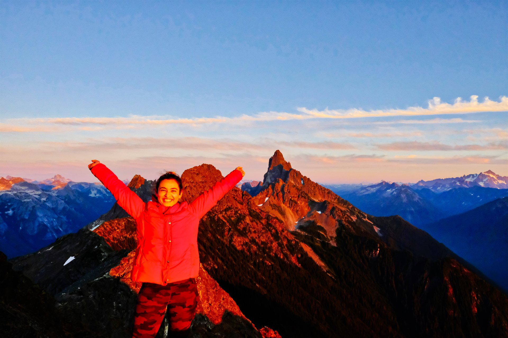
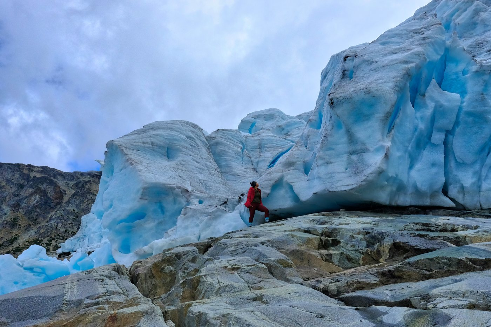
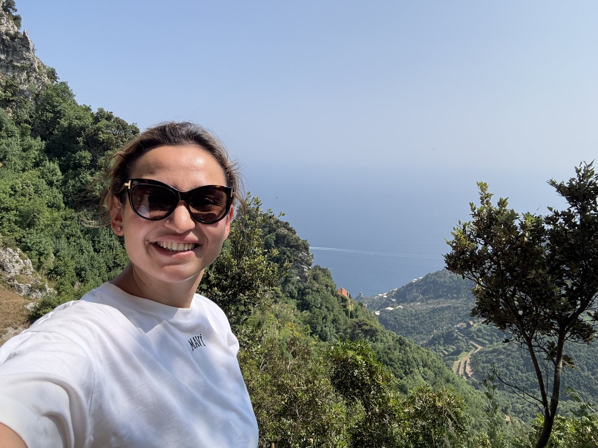
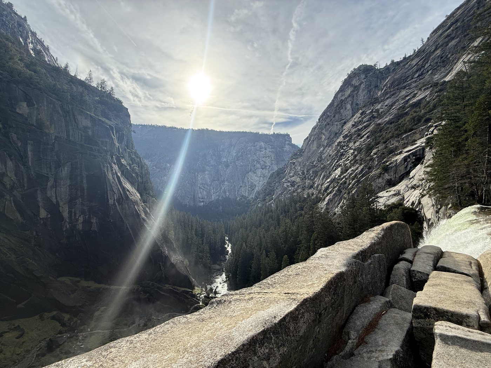

Rehab robots that fit a real living room
Modular, friendly, gamified upper-limb systems for stroke recovery. Designed around someone's couch, not a gleaming clinical lab. Bonus: they don't beep at you condescendingly.
PhD candidate, biomedical engineering // rehab robotics // wearable nervous system for the body you already have
I build technology that stays close to the body — robots that help you recover, sensors that whisper before you injure yourself, and software that turns rehab from a chore into something you'd actually open the app for. Less screwdriver-on-the-couch energy, more J.A.R.V.I.S.-with-a-foam-roller.
Mission brief // 001
Make humans superhuman, without making them less human.
I'm fascinated by the seam where biology, hardware, and software meet — the strange, beautiful interface between a body that already knows how to do extraordinary things and machines that can quietly cover for the parts that get tired, hurt, or forget.
The dream isn't to replace the human. It's to keep the human in charge — moving, choosing, remembering, recovering — for as long as possible.
Or, in the version I tell at parties: I'm building Iron Man for your physiotherapy session, your hiking trip, and your future eighty-year-old self.

Six research interests, written less like a thesis abstract and more like a design brief for a life. Each one is a real project, a real ache I want to fix, or a real future I'd like to be alive in.
Modular, friendly, gamified upper-limb systems for stroke recovery. Designed around someone's couch, not a gleaming clinical lab. Bonus: they don't beep at you condescendingly.
I've broken enough things to know rehab is boring. So I'm gamifying it — adaptive difficulty, real-time form feedback, leaderboards your physio secretly likes too. Make doing your exercises feel like a small win, not a small punishment.
Sensors that turn fatigue, form, effort and asymmetry into feedback you can use mid-rep, mid-trail, mid-set. Less "we'll review it after" and more "left hip's drifting, fix it now."
Alzheimer's runs in my family. So I care, professionally and personally, about systems that support memory, navigation, and confidence — assistive tech that protects independence when the brain starts editing without permission.
The kind of machine learning that listens before it talks. Adapts to your physiology, your fatigue, your goals — and never stops asking "is this still helping?". Agency stays with the person; the model stays helpful.
A future where my friends and I can still hike, ski, race, remember each other's birthdays, and argue over backcountry coffee at 80. Engineering as a long-term love letter to being outside.
The same closed-loop machinery — sense, decide, support — shows up at every stage. Optimize when you're peaking. Rehabilitate when you're rebuilding. Compensate when biology starts negotiating. Identity stays. Independence stays.
Sensing + feedback + smart coaching to push movement, endurance, learning, and recovery further than yesterday. The Tony-Stark-in-the-gym phase.
When something breaks, the system gets motivating, measurable, and personal. Therapy that travels home with you and shows up at 7am whether your physio is on call or not.
When biology starts charging interest, technology preserves agency: memory cues, mobility support, gentle confidence. Dignity is a design constraint, not a feature.
Movement is the point. Hiking, skiing, triathlon, sun, snow, an embarrassing amount of trail snacks. These aren't side notes to the research — they're why it matters. The bodies and brains we're trying to protect want to keep doing these things.




A handful of tiles I keep on the dashboard. Some are scientific. Some are mostly snacks. All are real.
BASc Aerospace, MHSc Clinical Eng, MSc Rehab Sci. The PhD is the stubborn one.
More than $250K secured. Translation: I have written a lot of polite emails.
Approximately 4% of which survive contact with reality. The rest go in a notebook.
Toronto: where the lab is warm and the lake is rude.
Personally invested in keeping it that way. Hence: rehab tech.
Independence at 80, with a working brain and a backpack.
// Open a direct line
I love conversations about rehab robotics, wearables, neuro-assistive systems, gamified therapy, entrepreneurship, endurance training, and what to read next. If you're building something at any of those intersections, use the form and I’ll reply there.